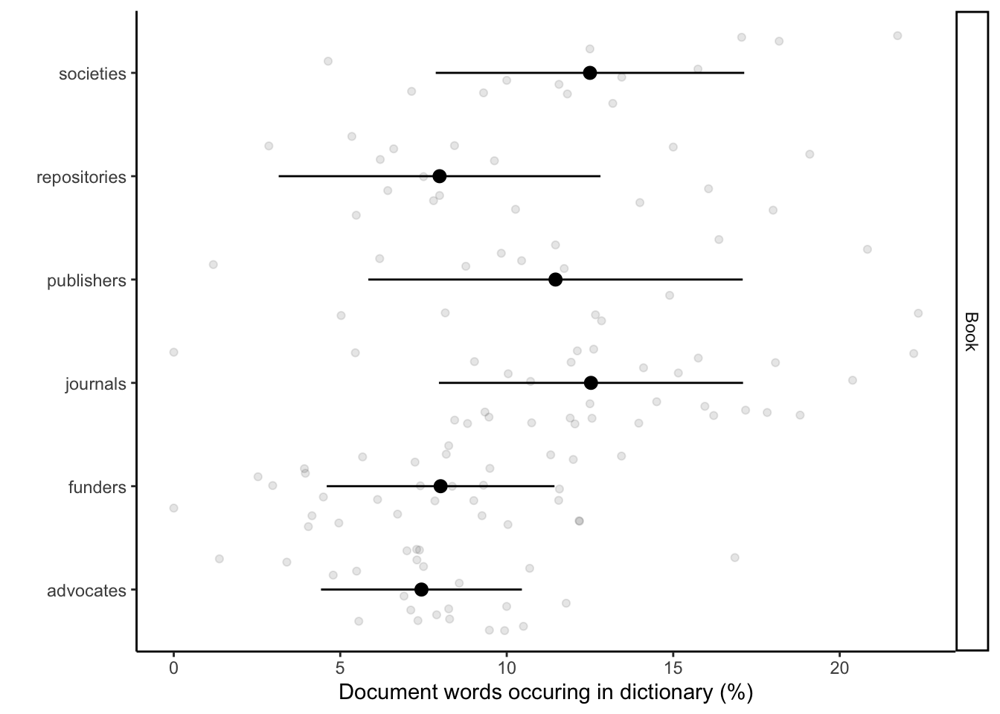
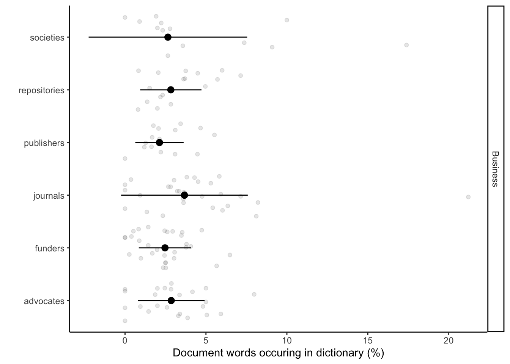
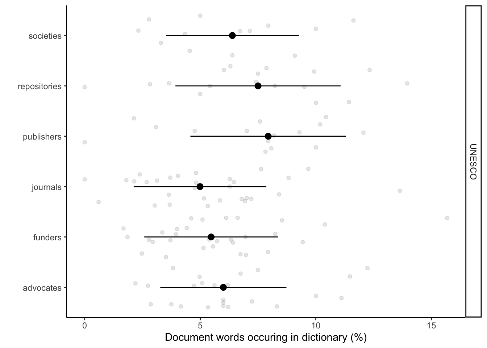

Last updated: 2022-11-24
Checks: 7 0
Knit directory:
workflowr-policy-landscape/
This reproducible R Markdown analysis was created with workflowr (version 1.7.0). The Checks tab describes the reproducibility checks that were applied when the results were created. The Past versions tab lists the development history.
Great! Since the R Markdown file has been committed to the Git repository, you know the exact version of the code that produced these results.
Great job! The global environment was empty. Objects defined in the global environment can affect the analysis in your R Markdown file in unknown ways. For reproduciblity it’s best to always run the code in an empty environment.
The command set.seed(20220505) was run prior to running
the code in the R Markdown file. Setting a seed ensures that any results
that rely on randomness, e.g. subsampling or permutations, are
reproducible.
Great job! Recording the operating system, R version, and package versions is critical for reproducibility.
Nice! There were no cached chunks for this analysis, so you can be confident that you successfully produced the results during this run.
Great job! Using relative paths to the files within your workflowr project makes it easier to run your code on other machines.
Great! You are using Git for version control. Tracking code development and connecting the code version to the results is critical for reproducibility.
The results in this page were generated with repository version 1ed503f. See the Past versions tab to see a history of the changes made to the R Markdown and HTML files.
Note that you need to be careful to ensure that all relevant files for
the analysis have been committed to Git prior to generating the results
(you can use wflow_publish or
wflow_git_commit). workflowr only checks the R Markdown
file, but you know if there are other scripts or data files that it
depends on. Below is the status of the Git repository when the results
were generated:
Ignored files:
Ignored: .Rhistory
Ignored: .Rproj.user/
Ignored: code/
Ignored: data/mission_statements/.DS_Store
Unstaged changes:
Modified: Policy_landscape_workflowr.R
Note that any generated files, e.g. HTML, png, CSS, etc., are not included in this status report because it is ok for generated content to have uncommitted changes.
These are the previous versions of the repository in which changes were
made to the R Markdown
(analysis/4_Language_analysis_Figure_2C.Rmd) and HTML
(docs/4_Language_analysis_Figure_2C.html) files. If you’ve
configured a remote Git repository (see ?wflow_git_remote),
click on the hyperlinks in the table below to view the files as they
were in that past version.
| File | Version | Author | Date | Message |
|---|---|---|---|---|
| html | 693000e | Andrew Beckerman | 2022-11-24 | Build site. |
| html | 60a6c61 | Andrew Beckerman | 2022-11-24 | Build site. |
| html | fb90a00 | Andrew Beckerman | 2022-11-24 | Build site. |
| Rmd | e08d7ac | Andrew Beckerman | 2022-11-24 | more organising and editing of workflowR mappings |
| html | e08d7ac | Andrew Beckerman | 2022-11-24 | more organising and editing of workflowR mappings |
| Rmd | 31239cd | Andrew Beckerman | 2022-11-24 | more organising and editing of workflowR mappings |
| html | 0a21152 | zuzannazagrodzka | 2022-09-21 | Build site. |
| html | 796aa8e | zuzannazagrodzka | 2022-09-21 | Build site. |
| Rmd | efb1202 | zuzannazagrodzka | 2022-09-21 | Publish other files |
Here we implement the application of text analyses to reveal association between stakeholders and Open Research (UNESCO) and business language.
This produces Fig 2c.
The code below includes the use of our control text corpus (book).
We use only words that are unique for each of the dictionaries. This enables us see the association and the divergence across the documents. We plotted the percentage of words that documents in the stakeholders groups share with the created by us dictionaries.
RATIO = number of words from one document present in one dictionary / total number of words in the document
Note: duplicates were not removed (it matters how many times a certain word occurs in a document)
Meaning of the columns in the final dataframe used for plotting:
# Clearing R
rm(list=ls())
# Libraries used for text/data analysis
library(tidyverse)
library(dplyr)
library(tidytext)
# Libraries used to create plots
library(ggplot2)
# Library to create a table when converting to html
library("kableExtra") # Data: words, stakeholder, documents...
df_corpuses <- read_csv("./output/created_datasets/cleaned_data.csv")Rows: 22822 Columns: 10
── Column specification ────────────────────────────────────────────────────────
Delimiter: ","
chr (10): txt, filename, name, doc_type, stakeholder, sentence_doc, orig_wor...
ℹ Use `spec()` to retrieve the full column specification for this data.
ℹ Specify the column types or set `show_col_types = FALSE` to quiet this message.data_words <- df_corpuses
# Dictionary data 100 words per dictionary
# all_dict <- read_csv("./output/created_datasets/freq_dict_total_100.csv")
# All words
all_dict <- read_csv("./output/created_datasets/freq_dict_total_all.csv")Rows: 9587 Columns: 6
── Column specification ────────────────────────────────────────────────────────
Delimiter: ","
chr (1): word
dbl (5): present_in_dict, present_BUS, present_UNESCO, present_book, sum
ℹ Use `spec()` to retrieve the full column specification for this data.
ℹ Specify the column types or set `show_col_types = FALSE` to quiet this message.# Data preparation
# Changing name of the dictionary variable
new_dictionary <- all_dict
head(new_dictionary,3)# A tibble: 3 × 6
present_in_dict word present_BUS present_UNESCO present_book sum
<dbl> <chr> <dbl> <dbl> <dbl> <dbl>
1 1 deer 0 0 1 1
2 1 preserve 0 0 1 1
3 1 duck 0 0 1 1# new_dictionary <- dictionaries
## Getting a data set with the words
data_words <- df_corpuses
# Merging
data_words <- data_words %>%
rename(document = name) %>%
select(document, stakeholder, word) %>%
left_join(new_dictionary, by = c("word" = "word")) # merging
# # HERE! I decided to remove words that did not appear in any of the dictionaries (20.09.2022)
# data_words <- data_words %>%
# na.omit()
# Adding a column with stakeholder and word together to allow merging later
data_words$stake_word <- paste(data_words$stakeholder, "_", data_words$word)
# Adding a column with a document name and word together to allow merging later
data_words$doc_word <- paste(data_words$document, "_", data_words$word)
# Adding a column that will be used later to calculate the total of unique words in the document (dictionaries without removed words)
data_words$doc_pres <- 1
# Adding two columns that will be used later to calculate the total of unique words in the document (new dictionaries with removed common words)
# Replace NAs with 0 in all absence/presence columns
data_words_ND <- data_words %>%
mutate_at(vars(present_in_dict, present_BUS, present_UNESCO, present_book, sum), ~replace_na(., 0)) # replacing NAs
# Select columns of my interest (stakeholders) and aggregate
data_words_ND <- data_words_ND %>%
select(document, stakeholder, word, present_BUS, present_UNESCO, present_book, doc_pres, sum) # selecting columns, sum - column with the information about in how many dictionaries a certain word occurs
df_sum_pres_ND <- aggregate(x = data_words_ND[,4:8], by = list(data_words_ND$document), FUN = sum, na.rm = TRUE)
# head(df_sum_pres_ND, 3)
# By doing aggregate I lost info about the stakeholder the doc come from, I want to add it
df_doc_ord <- data_words_ND %>%
select(document, stakeholder) %>%
distinct(document, .keep_all = TRUE)
df_sum_pres_ND <- df_sum_pres_ND %>%
left_join(df_doc_ord, by = c("Group.1" = "document")) %>%
rename(document = Group.1)
# Creating % columns in a new df_sum_proc_ND data frame
df_sum_proc_ND <- df_sum_pres_ND
df_sum_proc_ND$proc_BUS <-df_sum_proc_ND$present_BUS/df_sum_proc_ND$doc_pres*100
df_sum_proc_ND$proc_UNESCO <- df_sum_proc_ND$present_UNESCO/df_sum_proc_ND$doc_pres*100
df_sum_proc_ND$proc_book <- df_sum_proc_ND$present_book/df_sum_proc_ND$doc_pres*100
# Additional information about the data
# Stakeholders (2 from each of the stakeholders) that shared the highest no of words with UNESCO recommendation
UNESCO_stak_top <- df_sum_proc_ND %>%
group_by(stakeholder) %>%
arrange(desc(proc_UNESCO)) %>%
slice_head(n=2) %>%
select(stakeholder, document, proc_UNESCO)
UNESCO_stak_top %>%
kbl(caption = "Stakeholders that shared the higest no of words with UNESCO recommendation:") %>%
kable_classic("hover", full_width = T)| stakeholder | document | proc_UNESCO |
|---|---|---|
| advocates | Center for Open Science | 12.234043 |
| advocates | Africa Open Science and Hardware | 11.475410 |
| funders | Conacyt | 15.686274 |
| funders | French National Centre for Scientific Research | 10.394265 |
| journals | Frontiers in Ecology and Evolution | 13.636364 |
| journals | Ecology Letters | 9.677419 |
| publishers | Resilience Alliance | 12.060301 |
| publishers | BioOne | 10.447761 |
| repositories | KNB | 13.953488 |
| repositories | Harvard Dataverse | 12.328767 |
| societies | The Royal Society | 11.627907 |
| societies | British Ecological Society | 10.000000 |
# Stakeholders (2 from each of the stakeholders) that shared the highest no of words with business dictionary
business_stak_top <- df_sum_proc_ND %>%
group_by(stakeholder) %>%
arrange(desc(proc_BUS)) %>%
slice_head(n=2) %>%
select(stakeholder, document, proc_BUS)
business_stak_top %>%
kbl(caption = "Stakeholders that shared the higest no of words with business dictionary:") %>%
kable_classic("hover", full_width = T)| stakeholder | document | proc_BUS |
|---|---|---|
| advocates | Center for Open Science | 7.978723 |
| advocates | DataCite | 5.921053 |
| funders | The Daimler and Benz Foundation | 6.481482 |
| funders | CONICYT | 5.660377 |
| journals | Evolution | 21.212121 |
| journals | Ecology | 8.212560 |
| publishers | Resilience Alliance | 5.527638 |
| publishers | Annual Reviews | 4.666667 |
| repositories | NCBI | 7.142857 |
| repositories | EcoEvoRxiv | 6.000000 |
| societies | Society for the Study of Evolution | 17.391304 |
| societies | Australasian Evolution Society | 10.000000 |
# Stakeholders (2 from each of the stakeholders) that shared the highest no of words with book dictionary (control)
book_stak_top <- df_sum_proc_ND %>%
group_by(stakeholder) %>%
arrange(desc(proc_book)) %>%
slice_head(n=2) %>%
select(stakeholder, document, proc_book)
book_stak_top %>%
kbl(caption = "Stakeholders that shared the higest no of words with book dictionary (control):") %>%
kable_classic("hover", full_width = T)| stakeholder | document | proc_book |
|---|---|---|
| advocates | DOAJ | 16.85393 |
| advocates | Bioline International | 11.78344 |
| funders | Sea World Research and Rescue Foundation | 13.44538 |
| funders | NSERC | 12.18638 |
| journals | Evolution Letters | 22.22222 |
| journals | Remote Sensing in Ecology and Conservation | 20.38835 |
| publishers | The University of Chicago Press | 22.36025 |
| publishers | The Royal Society Publishing | 20.83333 |
| repositories | bioRxiv | 19.10112 |
| repositories | BCO-DMO | 18.00000 |
| societies | Society for the Study of Evolution | 21.73913 |
| societies | European Society for Evolutionary Biology | 18.18182 |
no <- nrow(df_sum_proc_ND)
no[1] 129# Plotting them separately book
df_sum_proc_ND_book = data.frame(
document = rep(df_sum_proc_ND$document,1),
stakeholder = rep(df_sum_proc_ND$stakeholder,1),
type = c(rep("Book",no)),
perc = c(df_sum_proc_ND$proc_book),
perc2 = c(df_sum_proc_ND$proc_book))
sum_df_sum_proc_ND_book =
df_sum_proc_ND_book %>%
group_by(stakeholder, type) %>%
# dplyr::summarise(perc = mean(perc), SD = sd(perc2))
dplyr::summarise(perc = median(perc), SD = sd(perc2))`summarise()` has grouped output by 'stakeholder'. You can override using the
`.groups` argument.fig_book <- ggplot() +
geom_point(data = df_sum_proc_ND_book, aes(x = perc, y = stakeholder), alpha = 0.1, position = position_jitter()) +
geom_pointrange(data = sum_df_sum_proc_ND_book, aes(x = perc, xmin = perc - SD, xmax = perc + SD, y = stakeholder)) +
facet_grid(type~.) +
labs(x = "Document words occuring in dictionary (%)", y = "") +
scale_colour_discrete(guide = F) +
theme_classic()
fig_bookWarning: It is deprecated to specify `guide = FALSE` to remove a guide. Please
use `guide = "none"` instead.
| Version | Author | Date |
|---|---|---|
| 796aa8e | zuzannazagrodzka | 2022-09-21 |
# Saving the figure
figure_name <- paste0("./output/Other_figures/language_book.png")
ggsave(filename = figure_name, fig_book + theme_bw(base_size = 5),
width = 10, height = 5, dpi = 600, units = "in", device='png') Warning: It is deprecated to specify `guide = FALSE` to remove a guide. Please
use `guide = "none"` instead.# Plotting them separately Business
df_sum_proc_ND_BUS = data.frame(
document = rep(df_sum_proc_ND$document,1),
stakeholder = rep(df_sum_proc_ND$stakeholder,1),
type = c(rep("Business",no)),
perc = c(df_sum_proc_ND$proc_BUS),
perc2 = c(df_sum_proc_ND$proc_BUS))
sum_df_sum_proc_ND_BUS =
df_sum_proc_ND_BUS %>%
group_by(stakeholder, type) %>%
# dplyr::summarise(perc = mean(perc), SD = sd(perc2))
dplyr::summarise(perc = median(perc), SD = sd(perc2))`summarise()` has grouped output by 'stakeholder'. You can override using the
`.groups` argument.fig_bus <- ggplot() +
geom_point(data = df_sum_proc_ND_BUS, aes(x = perc, y = stakeholder), alpha = 0.1, position = position_jitter()) +
geom_pointrange(data = sum_df_sum_proc_ND_BUS, aes(x = perc, xmin = perc - SD, xmax = perc + SD, y = stakeholder)) +
facet_grid(type~.) +
labs(x = "Document words occuring in dictionary (%)", y = "") +
scale_colour_discrete(guide = F) +
theme_classic()
fig_busWarning: It is deprecated to specify `guide = FALSE` to remove a guide. Please
use `guide = "none"` instead.
| Version | Author | Date |
|---|---|---|
| 796aa8e | zuzannazagrodzka | 2022-09-21 |
# Saving the figure
figure_name <- paste0("./output/Figure_2C/language_business.png")
ggsave(filename = figure_name, fig_bus + theme_bw(base_size = 5),
width = 10, height = 5, dpi = 600, units = "in", device='png') Warning: It is deprecated to specify `guide = FALSE` to remove a guide. Please
use `guide = "none"` instead.# Plotting them separately UNESCO
df_sum_proc_ND_UNESCO = data.frame(
document = rep(df_sum_proc_ND$document,1),
stakeholder = rep(df_sum_proc_ND$stakeholder,1),
type = c(rep("UNESCO",no)),
perc = c(df_sum_proc_ND$proc_UNESCO),
perc2 = c(df_sum_proc_ND$proc_UNESCO))
sum_df_sum_proc_ND_UNESCO =
df_sum_proc_ND_UNESCO %>%
group_by(stakeholder, type) %>%
# dplyr::summarise(perc = mean(perc), SD = sd(perc2))
dplyr::summarise(perc = median(perc), SD = sd(perc2))`summarise()` has grouped output by 'stakeholder'. You can override using the
`.groups` argument.fig_unesco <- ggplot() +
geom_point(data = df_sum_proc_ND_UNESCO, aes(x = perc, y = stakeholder), alpha = 0.1, position = position_jitter()) +
geom_pointrange(data = sum_df_sum_proc_ND_UNESCO, aes(x = perc, xmin = perc - SD, xmax = perc + SD, y = stakeholder)) +
facet_grid(type~.) +
labs(x = "Document words occuring in dictionary (%)", y = "") +
scale_colour_discrete(guide = F) +
theme_classic()
fig_unescoWarning: It is deprecated to specify `guide = FALSE` to remove a guide. Please
use `guide = "none"` instead.
| Version | Author | Date |
|---|---|---|
| 796aa8e | zuzannazagrodzka | 2022-09-21 |
# Saving the figure
# UNCOMMENT TO SAVE FIGURE
# figure_name <- paste0("./output/Figure_2C/language_unesco.png")
# ggsave(filename = figure_name, fig_unesco + theme_bw(base_size = 5),
# width = 10, height = 5, dpi = 600, units = "in", device='png') sessionInfo()R version 4.2.1 (2022-06-23)
Platform: x86_64-apple-darwin17.0 (64-bit)
Running under: macOS Big Sur ... 10.16
Matrix products: default
BLAS: /Library/Frameworks/R.framework/Versions/4.2/Resources/lib/libRblas.0.dylib
LAPACK: /Library/Frameworks/R.framework/Versions/4.2/Resources/lib/libRlapack.dylib
locale:
[1] en_GB.UTF-8/en_GB.UTF-8/en_GB.UTF-8/C/en_GB.UTF-8/en_GB.UTF-8
attached base packages:
[1] stats graphics grDevices utils datasets methods base
other attached packages:
[1] kableExtra_1.3.4 tidytext_0.3.4 forcats_0.5.2 stringr_1.4.1
[5] dplyr_1.0.10 purrr_0.3.5 readr_2.1.3 tidyr_1.2.1
[9] tibble_3.1.8 ggplot2_3.3.6 tidyverse_1.3.2 workflowr_1.7.0
loaded via a namespace (and not attached):
[1] fs_1.5.2 lubridate_1.8.0 bit64_4.0.5
[4] webshot_0.5.4 httr_1.4.4 rprojroot_2.0.3
[7] SnowballC_0.7.0 tools_4.2.1 backports_1.4.1
[10] bslib_0.4.0 utf8_1.2.2 R6_2.5.1
[13] DBI_1.1.3 colorspace_2.0-3 withr_2.5.0
[16] tidyselect_1.2.0 processx_3.7.0 bit_4.0.4
[19] compiler_4.2.1 git2r_0.30.1 textshaping_0.3.6
[22] cli_3.4.1 rvest_1.0.3 xml2_1.3.3
[25] labeling_0.4.2 sass_0.4.2 scales_1.2.1
[28] callr_3.7.2 systemfonts_1.0.4 digest_0.6.29
[31] rmarkdown_2.16 svglite_2.1.0 pkgconfig_2.0.3
[34] htmltools_0.5.3 highr_0.9 dbplyr_2.2.1
[37] fastmap_1.1.0 rlang_1.0.6 readxl_1.4.1
[40] rstudioapi_0.14 farver_2.1.1 jquerylib_0.1.4
[43] generics_0.1.3 jsonlite_1.8.3 vroom_1.6.0
[46] tokenizers_0.2.3 googlesheets4_1.0.1 magrittr_2.0.3
[49] Matrix_1.4-1 Rcpp_1.0.9 munsell_0.5.0
[52] fansi_1.0.3 lifecycle_1.0.3 stringi_1.7.8
[55] whisker_0.4 yaml_2.3.6 grid_4.2.1
[58] parallel_4.2.1 promises_1.2.0.1 crayon_1.5.2
[61] lattice_0.20-45 haven_2.5.1 hms_1.1.2
[64] knitr_1.40 ps_1.7.1 pillar_1.8.1
[67] reprex_2.0.2 glue_1.6.2 evaluate_0.16
[70] getPass_0.2-2 modelr_0.1.9 vctrs_0.5.0
[73] tzdb_0.3.0 httpuv_1.6.6 cellranger_1.1.0
[76] gtable_0.3.1 assertthat_0.2.1 cachem_1.0.6
[79] xfun_0.33 broom_1.0.1 janeaustenr_1.0.0
[82] later_1.3.0 ragg_1.2.4 googledrive_2.0.0
[85] viridisLite_0.4.1 gargle_1.2.1 ellipsis_0.3.2
sessionInfo()R version 4.2.1 (2022-06-23)
Platform: x86_64-apple-darwin17.0 (64-bit)
Running under: macOS Big Sur ... 10.16
Matrix products: default
BLAS: /Library/Frameworks/R.framework/Versions/4.2/Resources/lib/libRblas.0.dylib
LAPACK: /Library/Frameworks/R.framework/Versions/4.2/Resources/lib/libRlapack.dylib
locale:
[1] en_GB.UTF-8/en_GB.UTF-8/en_GB.UTF-8/C/en_GB.UTF-8/en_GB.UTF-8
attached base packages:
[1] stats graphics grDevices utils datasets methods base
other attached packages:
[1] kableExtra_1.3.4 tidytext_0.3.4 forcats_0.5.2 stringr_1.4.1
[5] dplyr_1.0.10 purrr_0.3.5 readr_2.1.3 tidyr_1.2.1
[9] tibble_3.1.8 ggplot2_3.3.6 tidyverse_1.3.2 workflowr_1.7.0
loaded via a namespace (and not attached):
[1] fs_1.5.2 lubridate_1.8.0 bit64_4.0.5
[4] webshot_0.5.4 httr_1.4.4 rprojroot_2.0.3
[7] SnowballC_0.7.0 tools_4.2.1 backports_1.4.1
[10] bslib_0.4.0 utf8_1.2.2 R6_2.5.1
[13] DBI_1.1.3 colorspace_2.0-3 withr_2.5.0
[16] tidyselect_1.2.0 processx_3.7.0 bit_4.0.4
[19] compiler_4.2.1 git2r_0.30.1 textshaping_0.3.6
[22] cli_3.4.1 rvest_1.0.3 xml2_1.3.3
[25] labeling_0.4.2 sass_0.4.2 scales_1.2.1
[28] callr_3.7.2 systemfonts_1.0.4 digest_0.6.29
[31] rmarkdown_2.16 svglite_2.1.0 pkgconfig_2.0.3
[34] htmltools_0.5.3 highr_0.9 dbplyr_2.2.1
[37] fastmap_1.1.0 rlang_1.0.6 readxl_1.4.1
[40] rstudioapi_0.14 farver_2.1.1 jquerylib_0.1.4
[43] generics_0.1.3 jsonlite_1.8.3 vroom_1.6.0
[46] tokenizers_0.2.3 googlesheets4_1.0.1 magrittr_2.0.3
[49] Matrix_1.4-1 Rcpp_1.0.9 munsell_0.5.0
[52] fansi_1.0.3 lifecycle_1.0.3 stringi_1.7.8
[55] whisker_0.4 yaml_2.3.6 grid_4.2.1
[58] parallel_4.2.1 promises_1.2.0.1 crayon_1.5.2
[61] lattice_0.20-45 haven_2.5.1 hms_1.1.2
[64] knitr_1.40 ps_1.7.1 pillar_1.8.1
[67] reprex_2.0.2 glue_1.6.2 evaluate_0.16
[70] getPass_0.2-2 modelr_0.1.9 vctrs_0.5.0
[73] tzdb_0.3.0 httpuv_1.6.6 cellranger_1.1.0
[76] gtable_0.3.1 assertthat_0.2.1 cachem_1.0.6
[79] xfun_0.33 broom_1.0.1 janeaustenr_1.0.0
[82] later_1.3.0 ragg_1.2.4 googledrive_2.0.0
[85] viridisLite_0.4.1 gargle_1.2.1 ellipsis_0.3.2